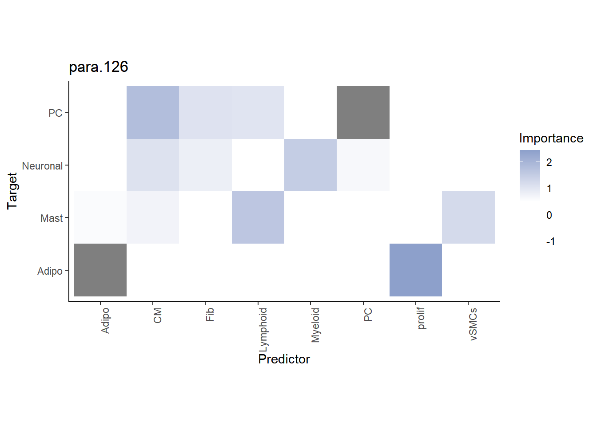

Structural analysis with MISTy - based on cell2location deconvolution
Leoni Zimmermann
Heidelberg University, Heidelberg, GermanyJovan Tanevski
Heidelberg University and Heidelberg University Hospital, Heidelberg, GermanyJožef Stefan Institute, Ljubljana, Sloveniajovan.tanevski@uni-heidelberg.de
2024-03-11
Last updated: 2024-03-11
Checks: 7 0
Knit directory:
ProtocolLabRotationSaezRodriguezGroup/
This reproducible R Markdown analysis was created with workflowr (version 1.7.1). The Checks tab describes the reproducibility checks that were applied when the results were created. The Past versions tab lists the development history.
Great! Since the R Markdown file has been committed to the Git repository, you know the exact version of the code that produced these results.
Great job! The global environment was empty. Objects defined in the global environment can affect the analysis in your R Markdown file in unknown ways. For reproduciblity it’s best to always run the code in an empty environment.
The command set.seed(20240306) was run prior to running
the code in the R Markdown file. Setting a seed ensures that any results
that rely on randomness, e.g. subsampling or permutations, are
reproducible.
Great job! Recording the operating system, R version, and package versions is critical for reproducibility.
Nice! There were no cached chunks for this analysis, so you can be confident that you successfully produced the results during this run.
Great job! Using relative paths to the files within your workflowr project makes it easier to run your code on other machines.
Great! You are using Git for version control. Tracking code development and connecting the code version to the results is critical for reproducibility.
The results in this page were generated with repository version 38a9f93. See the Past versions tab to see a history of the changes made to the R Markdown and HTML files.
Note that you need to be careful to ensure that all relevant files for
the analysis have been committed to Git prior to generating the results
(you can use wflow_publish or
wflow_git_commit). workflowr only checks the R Markdown
file, but you know if there are other scripts or data files that it
depends on. Below is the status of the Git repository when the results
were generated:
Untracked files:
Untracked: 10X_Visium_ACH005.tar.gz
Untracked: ACH005/
Untracked: data/10X_Visium_ACH005.tar.gz
Untracked: omni_resource.csv
Untracked: omnipathr-log/
Untracked: result/
Untracked: results/
Note that any generated files, e.g. HTML, png, CSS, etc., are not included in this status report because it is ok for generated content to have uncommitted changes.
These are the previous versions of the repository in which changes were
made to the R Markdown
(analysis/MistyRStructuralAnalysisPipelineC2L.Rmd) and HTML
(docs/MistyRStructuralAnalysisPipelineC2L.html) files. If
you’ve configured a remote Git repository (see
?wflow_git_remote), click on the hyperlinks in the table
below to view the files as they were in that past version.
| File | Version | Author | Date | Message |
|---|---|---|---|---|
| Rmd | 38a9f93 | leotenshii | 2024-03-11 | Revert "changed paths to data/…" |
| Rmd | 5e9bf15 | leotenshii | 2024-03-11 | changed paths to data/… |
| Rmd | 5ec41b8 | leotenshii | 2024-03-11 | upload of vignettes |
Introduction
MISTy is designed to analyze spatial omics datasets within and between distinct spatial contexts referred to as views. This analysis can focus solely on structural information. Spatial transcriptomic methods such as 10x Visium capture information from areas containing multiple cells. Then, deconvolution is applied to relate the measured data of the spots back to individual cells. A commonly used tool for this deconvolution step is cell2location.
This vignette presents a workflow for the analysis of structural
data, guiding users through the application of mistyR to
the results of cell2location deconvolution.
Load the necessary packages:
# MISTy
library(mistyR)
library(future)
#Seurat
library(Seurat)
library(SeuratObject)
# Data manipulation
library(tidyverse) Warning: Paket 'ggplot2' wurde unter R Version 4.3.3 erstelltWarning: Paket 'readr' wurde unter R Version 4.3.3 erstellt# Distances
library(distances)Get and load the data
For this showcase, we use a 10X Visium spatial slide from Kuppe et al., 2022, where they created a spatial multi-omic map of human myocardial infarction. The example data comes from a human heart in a later state after myocardial infarction that was used in the study. The Seurat object contains, among other things, the coordinates of the spots on the slides and their cellular composition estimated by cell2location. First, we have to download and extract the file:
download.file("https://zenodo.org/records/6580069/files/10X_Visium_ACH005.tar.gz?download=1",
destfile = "10X_Visium_ACH005.tar.gz", method = "curl")
untar("10X_Visium_ACH005.tar.gz")The next step is to load the data and extract the cell composition and location of the spots. The rows are shifted, which means that the real distances between two spots are not always the same. It is therefore advantageous to use the pixel coordinates instead of row and column numbers, as the distances between these are represented accurately.
# Load file into R
seurat_vs <- readRDS("ACH005/ACH005.rds")
# Extract the cell composition
composition <- as_tibble(t(seurat_vs[["c2l_props"]]$data))
# Extract the location data
geometry <- GetTissueCoordinates(seurat_vs, cols = c("imagerow", "imagecol"), scale = NULL)Visualize cell proportion in spots
First, we visually explore the slide itself and then through a
graphical representation of cell-type proportions at each spot. When
adding interactive = TRUE to
SpatialFeaturePlot we can cycle through the proportions of
the different celltypes.
# Tissue Slide
SpatialPlot(seurat_vs, keep.scale = NULL, alpha = 0) 
# Cell type proportions
DefaultAssay(seurat_vs) <- "c2l_props"
SpatialFeaturePlot(seurat_vs, keep.scale = NULL, features = "CM") Based on the plots, we can observe that some cell types are found more frequently than others. Additionally, we can identify patterns in the distribution of cells, with some being widespread across the entire slide while others are concentrated in specific areas. Furthermore, there are cell types that share a similar distribution.
MISTy views
First, we need to define an intraview that captures the cell type
proportions within a spot. To capture the distribution of cell type
proportions in the surrounding tissue, we add a paraview. For this
vignette, the radius we choose is the distance to the nearest neighbor
plus the standard deviation. We calculate the weights of each spot with
family = gaussian. Then we run MISTy and collect the
results.
# Calculating the radius
geom_dist <- as.matrix(distances(geometry))
dist_nn <- apply(geom_dist, 1, function(x) (sort(x)[2]))
paraview_radius <- ceiling(mean(dist_nn+ sd(dist_nn)))
# Create views
heart_views <- create_initial_view(composition) %>%
add_paraview(geometry, l= paraview_radius, family = "gaussian")
# Run misty and collect results
run_misty(heart_views, "result/vignette_structural_pipeline")[1] "F:/LabRotationSaez/ProtocolLabRotationSaezRodriguezGroup/result/vignette_structural_pipeline"misty_results <- collect_results("result/vignette_structural_pipeline")Downstream Analysis
With the collected results, we can now answer following questions:
1. To what extent can the occurring cell types of the surrounding tissue explain the cell type composition of the spot compared to the intraview?
Here we can look at two different statistics: multi.R2
shows the total variance explained by the multiview model.
gain.R2 shows the increase in explainable variance from to
the paraview.
misty_results %>%
plot_improvement_stats("multi.R2") %>%
plot_improvement_stats("gain.R2")Warning: Removed 11 rows containing missing values or values outside the scale range
(`geom_segment()`).Warning: Removed 11 rows containing missing values or values outside the scale range
(`geom_segment()`).The paraview particularly increases the explained variance for adipocytes and mast cells. In general, the significant gain in R2 can be interpreted as the following:
“We can better explain the expression of marker X when we consider additional views other than the intrinsic view.”
2. What are the specific relations that can explain the contributions?
To explain the contributions, we can visualize the importance of each cell type in predicting the cell type distribution for each view separately.
First, for the intrinsic view:
misty_results %>% plot_interaction_heatmap(view = "intra", clean = TRUE)We can observe that cardiomyocytes are a significant predictor for several cell types when in the same spot. To identify the target with the best prediction by cardiomyocytes, we can view the importance values as follows:
misty_results$importances.aggregated %>%
filter(view == "intra", Predictor == "CM") %>%
arrange(-Importance)# A tibble: 11 × 5
view Predictor Target Importance nsamples
<chr> <chr> <chr> <dbl> <int>
1 intra CM Fib 2.74 1
2 intra CM vSMCs 2.43 1
3 intra CM prolif 2.23 1
4 intra CM Myeloid 2.21 1
5 intra CM Endo 2.15 1
6 intra CM Mast 2.02 1
7 intra CM PC 1.90 1
8 intra CM Lymphoid 0.844 1
9 intra CM Adipo -0.0416 1
10 intra CM Neuronal -0.0865 1
11 intra CM CM NA 1Let’s take a look at the spatial distribution of these cell types in the tissue slide:
SpatialFeaturePlot(seurat_vs, keep.scale = NULL, features = c("Fib","CM"), image.alpha = 0)We can observe that areas with high proportions of cardiomyocytes have low proportions of fibroblasts and vice versa.
Now we repeat this analysis with the paraview. With trim
we display only targets with a value above 1.75 for
gain.R2. To set an importance threshold we apply
cutoff.
misty_results %>% plot_interaction_heatmap(view = "para.126", clean = TRUE,
trim = 1.75, trim.measure = "gain.R2",
cutoff = 0.5) 
Here, we select the target adipocytes, as we know from previous analysis that the paraview contributes a large part to explaining its distribution. The best predictor for adipocytes are proliferating cells:
SpatialFeaturePlot(seurat_vs, keep.scale = NULL, features = c("prolif","Adipo"), image.alpha = 0)The plots show us that, in some places, the localization of the two cell types overlap.
See also
browseVignettes("mistyR")
Session Info
Here is the output of sessionInfo() at the point when
this document was compiled.
sessionInfo()R version 4.3.2 (2023-10-31 ucrt)
Platform: x86_64-w64-mingw32/x64 (64-bit)
Running under: Windows 10 x64 (build 19045)
Matrix products: default
locale:
[1] LC_COLLATE=German_Germany.utf8 LC_CTYPE=German_Germany.utf8
[3] LC_MONETARY=German_Germany.utf8 LC_NUMERIC=C
[5] LC_TIME=German_Germany.utf8
time zone: Europe/Berlin
tzcode source: internal
attached base packages:
[1] stats graphics grDevices utils datasets methods base
other attached packages:
[1] distances_0.1.10 lubridate_1.9.3 forcats_1.0.0 stringr_1.5.1
[5] dplyr_1.1.4 purrr_1.0.2 readr_2.1.5 tidyr_1.3.0
[9] tibble_3.2.1 ggplot2_3.5.0 tidyverse_2.0.0 Seurat_5.0.1
[13] SeuratObject_5.0.1 sp_2.1-2 future_1.33.1 mistyR_1.10.0
[17] workflowr_1.7.1
loaded via a namespace (and not attached):
[1] RcppAnnoy_0.0.21 splines_4.3.2 later_1.3.2
[4] filelock_1.0.3 R.oo_1.26.0 polyclip_1.10-6
[7] hardhat_1.3.1 pROC_1.18.5 rpart_4.1.23
[10] fastDummies_1.7.3 lifecycle_1.0.4 rprojroot_2.0.4
[13] vroom_1.6.5 globals_0.16.3 processx_3.8.3
[16] lattice_0.22-5 MASS_7.3-60 magrittr_2.0.3
[19] plotly_4.10.3 sass_0.4.8 rmarkdown_2.25
[22] jquerylib_0.1.4 yaml_2.3.8 rlist_0.4.6.2
[25] httpuv_1.6.13 sctransform_0.4.1 spam_2.10-0
[28] spatstat.sparse_3.0-3 reticulate_1.34.0 cowplot_1.1.2
[31] pbapply_1.7-2 RColorBrewer_1.1-3 abind_1.4-5
[34] Rtsne_0.17 R.utils_2.12.3 nnet_7.3-19
[37] ipred_0.9-14 git2r_0.33.0 lava_1.8.0
[40] ggrepel_0.9.4 irlba_2.3.5.1 listenv_0.9.1
[43] spatstat.utils_3.0-4 goftest_1.2-3 RSpectra_0.16-1
[46] spatstat.random_3.2-2 fitdistrplus_1.1-11 parallelly_1.37.1
[49] leiden_0.4.3.1 codetools_0.2-19 tidyselect_1.2.0
[52] farver_2.1.1 stats4_4.3.2 matrixStats_1.2.0
[55] spatstat.explore_3.2-5 jsonlite_1.8.8 caret_6.0-94
[58] ellipsis_0.3.2 progressr_0.14.0 ggridges_0.5.5
[61] survival_3.5-7 iterators_1.0.14 foreach_1.5.2
[64] tools_4.3.2 ica_1.0-3 Rcpp_1.0.11
[67] glue_1.6.2 prodlim_2023.08.28 gridExtra_2.3
[70] xfun_0.41 ranger_0.16.0 withr_3.0.0
[73] fastmap_1.1.1 fansi_1.0.6 callr_3.7.3
[76] digest_0.6.33 timechange_0.3.0 R6_2.5.1
[79] mime_0.12 colorspace_2.1-0 scattermore_1.2
[82] tensor_1.5 spatstat.data_3.0-3 R.methodsS3_1.8.2
[85] utf8_1.2.4 generics_0.1.3 data.table_1.15.2
[88] recipes_1.0.10 class_7.3-22 httr_1.4.7
[91] ridge_3.3 htmlwidgets_1.6.4 whisker_0.4.1
[94] ModelMetrics_1.2.2.2 uwot_0.1.16 pkgconfig_2.0.3
[97] gtable_0.3.4 timeDate_4032.109 lmtest_0.9-40
[100] furrr_0.3.1 htmltools_0.5.7 dotCall64_1.1-1
[103] scales_1.3.0 png_0.1-8 gower_1.0.1
[106] knitr_1.45 rstudioapi_0.15.0 tzdb_0.4.0
[109] reshape2_1.4.4 nlme_3.1-164 cachem_1.0.8
[112] zoo_1.8-12 KernSmooth_2.23-22 parallel_4.3.2
[115] miniUI_0.1.1.1 pillar_1.9.0 grid_4.3.2
[118] vctrs_0.6.5 RANN_2.6.1 promises_1.2.1
[121] xtable_1.8-4 cluster_2.1.6 archive_1.1.7
[124] evaluate_0.23 cli_3.6.2 compiler_4.3.2
[127] crayon_1.5.2 rlang_1.1.2 future.apply_1.11.1
[130] labeling_0.4.3 ps_1.7.5 getPass_0.2-4
[133] plyr_1.8.9 fs_1.6.3 stringi_1.8.3
[136] viridisLite_0.4.2 deldir_2.0-4 assertthat_0.2.1
[139] munsell_0.5.0 lazyeval_0.2.2 spatstat.geom_3.2-7
[142] Matrix_1.6-4 RcppHNSW_0.5.0 hms_1.1.3
[145] patchwork_1.2.0.9000 bit64_4.0.5 shiny_1.8.0
[148] highr_0.10 ROCR_1.0-11 igraph_1.6.0
[151] bslib_0.6.1 bit_4.0.5
sessionInfo()R version 4.3.2 (2023-10-31 ucrt)
Platform: x86_64-w64-mingw32/x64 (64-bit)
Running under: Windows 10 x64 (build 19045)
Matrix products: default
locale:
[1] LC_COLLATE=German_Germany.utf8 LC_CTYPE=German_Germany.utf8
[3] LC_MONETARY=German_Germany.utf8 LC_NUMERIC=C
[5] LC_TIME=German_Germany.utf8
time zone: Europe/Berlin
tzcode source: internal
attached base packages:
[1] stats graphics grDevices utils datasets methods base
other attached packages:
[1] distances_0.1.10 lubridate_1.9.3 forcats_1.0.0 stringr_1.5.1
[5] dplyr_1.1.4 purrr_1.0.2 readr_2.1.5 tidyr_1.3.0
[9] tibble_3.2.1 ggplot2_3.5.0 tidyverse_2.0.0 Seurat_5.0.1
[13] SeuratObject_5.0.1 sp_2.1-2 future_1.33.1 mistyR_1.10.0
[17] workflowr_1.7.1
loaded via a namespace (and not attached):
[1] RcppAnnoy_0.0.21 splines_4.3.2 later_1.3.2
[4] filelock_1.0.3 R.oo_1.26.0 polyclip_1.10-6
[7] hardhat_1.3.1 pROC_1.18.5 rpart_4.1.23
[10] fastDummies_1.7.3 lifecycle_1.0.4 rprojroot_2.0.4
[13] vroom_1.6.5 globals_0.16.3 processx_3.8.3
[16] lattice_0.22-5 MASS_7.3-60 magrittr_2.0.3
[19] plotly_4.10.3 sass_0.4.8 rmarkdown_2.25
[22] jquerylib_0.1.4 yaml_2.3.8 rlist_0.4.6.2
[25] httpuv_1.6.13 sctransform_0.4.1 spam_2.10-0
[28] spatstat.sparse_3.0-3 reticulate_1.34.0 cowplot_1.1.2
[31] pbapply_1.7-2 RColorBrewer_1.1-3 abind_1.4-5
[34] Rtsne_0.17 R.utils_2.12.3 nnet_7.3-19
[37] ipred_0.9-14 git2r_0.33.0 lava_1.8.0
[40] ggrepel_0.9.4 irlba_2.3.5.1 listenv_0.9.1
[43] spatstat.utils_3.0-4 goftest_1.2-3 RSpectra_0.16-1
[46] spatstat.random_3.2-2 fitdistrplus_1.1-11 parallelly_1.37.1
[49] leiden_0.4.3.1 codetools_0.2-19 tidyselect_1.2.0
[52] farver_2.1.1 stats4_4.3.2 matrixStats_1.2.0
[55] spatstat.explore_3.2-5 jsonlite_1.8.8 caret_6.0-94
[58] ellipsis_0.3.2 progressr_0.14.0 ggridges_0.5.5
[61] survival_3.5-7 iterators_1.0.14 foreach_1.5.2
[64] tools_4.3.2 ica_1.0-3 Rcpp_1.0.11
[67] glue_1.6.2 prodlim_2023.08.28 gridExtra_2.3
[70] xfun_0.41 ranger_0.16.0 withr_3.0.0
[73] fastmap_1.1.1 fansi_1.0.6 callr_3.7.3
[76] digest_0.6.33 timechange_0.3.0 R6_2.5.1
[79] mime_0.12 colorspace_2.1-0 scattermore_1.2
[82] tensor_1.5 spatstat.data_3.0-3 R.methodsS3_1.8.2
[85] utf8_1.2.4 generics_0.1.3 data.table_1.15.2
[88] recipes_1.0.10 class_7.3-22 httr_1.4.7
[91] ridge_3.3 htmlwidgets_1.6.4 whisker_0.4.1
[94] ModelMetrics_1.2.2.2 uwot_0.1.16 pkgconfig_2.0.3
[97] gtable_0.3.4 timeDate_4032.109 lmtest_0.9-40
[100] furrr_0.3.1 htmltools_0.5.7 dotCall64_1.1-1
[103] scales_1.3.0 png_0.1-8 gower_1.0.1
[106] knitr_1.45 rstudioapi_0.15.0 tzdb_0.4.0
[109] reshape2_1.4.4 nlme_3.1-164 cachem_1.0.8
[112] zoo_1.8-12 KernSmooth_2.23-22 parallel_4.3.2
[115] miniUI_0.1.1.1 pillar_1.9.0 grid_4.3.2
[118] vctrs_0.6.5 RANN_2.6.1 promises_1.2.1
[121] xtable_1.8-4 cluster_2.1.6 archive_1.1.7
[124] evaluate_0.23 cli_3.6.2 compiler_4.3.2
[127] crayon_1.5.2 rlang_1.1.2 future.apply_1.11.1
[130] labeling_0.4.3 ps_1.7.5 getPass_0.2-4
[133] plyr_1.8.9 fs_1.6.3 stringi_1.8.3
[136] viridisLite_0.4.2 deldir_2.0-4 assertthat_0.2.1
[139] munsell_0.5.0 lazyeval_0.2.2 spatstat.geom_3.2-7
[142] Matrix_1.6-4 RcppHNSW_0.5.0 hms_1.1.3
[145] patchwork_1.2.0.9000 bit64_4.0.5 shiny_1.8.0
[148] highr_0.10 ROCR_1.0-11 igraph_1.6.0
[151] bslib_0.6.1 bit_4.0.5